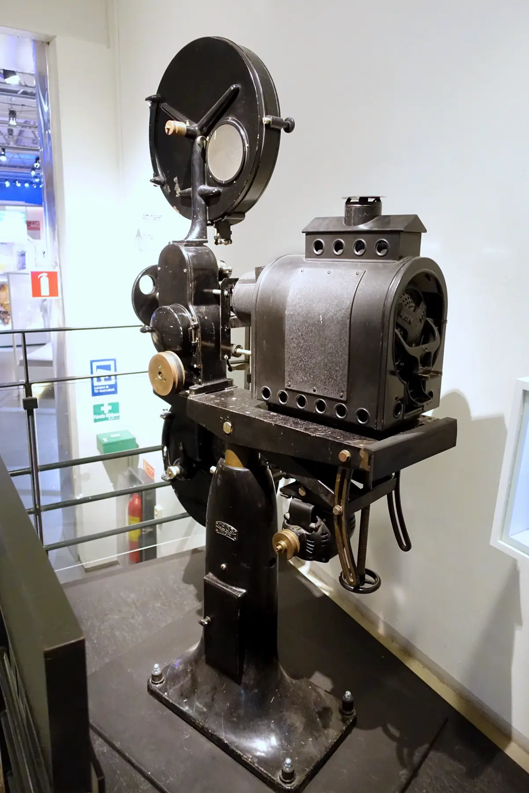
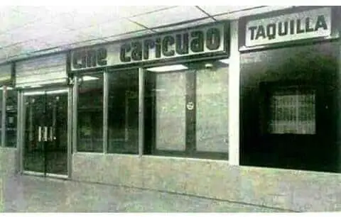
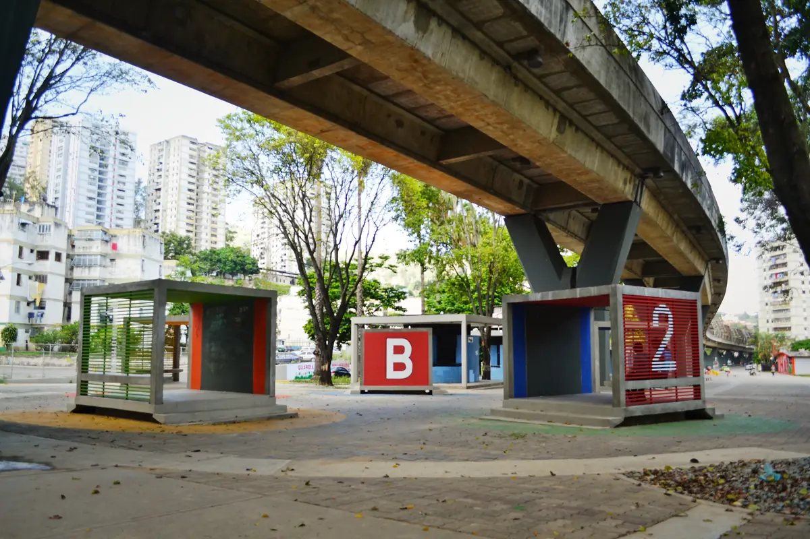
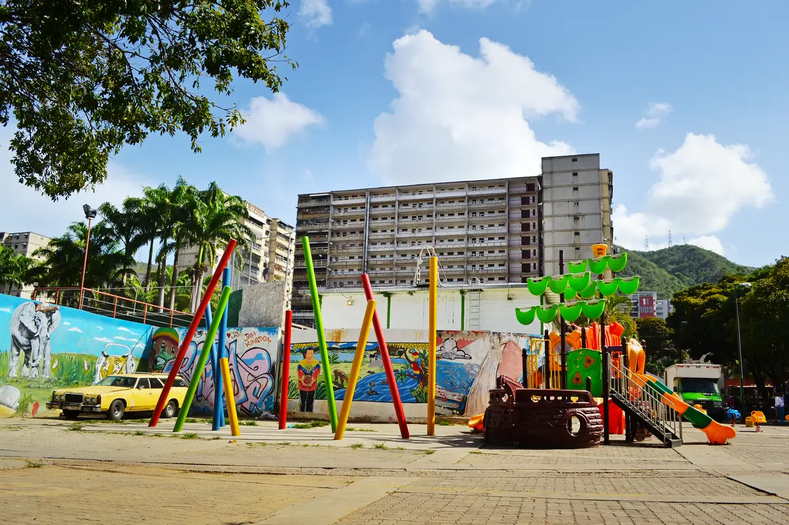

Una iniciativa que nace en Caricuao para proyectar las historias de una comunidad creadora y abrir un lugar de encuentro alrededor del cine.
01
El Cine

Hacer cine es un acto de creación colectiva; es la reunión convertida en ritual donde confluyen las experiencias y el sueño de llevar a la pantalla grande historias que se transforman en referencia. Pero el cine también se debe mirar en colectivo y disfrutar en comunidad; tiene que convertirse en un espacio de preguntas y puntos de vista donde la mirada esté puesta en las audiencias y no en la vanagloria del realizador, porque la mayor aspiración de este festival es dotar de inspiración a los nacientes cineastas para que desarrollen historias locales destinadas a la gran pantalla.
En un mundo digital en el que las plataformas de streaming fracturan la reunión amorosa y colectiva, desarrollar un festival de cine se convierte en una esperanza viva. Nos permite volver a las raíces de nuestras comunidades originarias, donde la toma de decisiones, las lágrimas y los abrazos se compartían en comunidad.
La parroquia ecológica de Caricuao —un valle rodeado de cuatro montañas que guardan vida y verdor— ha sido históricamente un espacio de encuentro artístico y cultural. Así lo demuestran la reconocida movida musical alternativa de los años 90, los populosos Velorios de Cruz de Mayo, las montañas que han servido como escenario perfecto para filmar diversos contenidos audiovisuales, el Parque Zoológico de Caricuao como centro para la discusión ecológica, el Parque Nuevas Generaciones Urbanas para la práctica de deportes extremos y, sobre todo, la multitud de almas que poseen un profundo sentido de pertenencia por esta parroquia. Todo esto hace de Caricuao el escenario perfecto para reunirnos a celebrar y mirar cine en colectivo.
Esta primera edición del Festival de Cine Caricuao 2026 se dispone a hilvanar los diversos elementos que caracterizan a la parroquia: en primer lugar, posicionarla como un destino turístico ecológico sostenible y democratizar el cine mediante la proyección de filmes en espacios no convencionales, junto a ejes formativos pensados para la infancia, la juventud y la adultez. Todas estas actividades estarán acompañadas por la banda sonora de los caricuaenses, a través de conciertos y toques callejeros de rock alternativo, reggae y ska contestatario, incorporando además performances y elementos teatrales que impregnarán al festival a un saturado aroma a hierba fresca, cine callejero e historia ancestral.
¡En Caricuao somos Toromaimas!
02
Historia

Levantando las históricas banderas de los y las Caricuao, que desde la década de los setenta tomaron las aceras, calles y barriadas para hacer cineforos y construir pensamiento crítico por medio del séptimo arte, nace esta idea de festival, que es apenas una más de las contribuciones para hacer de Caricuao un espacio de encuentro a través del arte y el reconocimiento de los muchísimos acontecimientos históricos que tributaron a la conformación de una parroquia ecológica y cultural.
Para quienes habitan el valle de Caricuao, es imperativo el sentimiento de regocijo, amor y arraigo por un espacio cargado de historia, música, arte y resistencia cultural, rodeado de cuatro parques metropolitanos y declarada parroquia ecológica en el año 2009. Ese fervor caricuaense está profundamente incrustado en el corazón y en las creaciones artísticas y cinematográficas de quienes hoy conforman el comité organizador del festival, Ricardo Martínez y Laura Peña, acompañados de la sensibilidad de Irabé Seguías, quien ya se auto percibe como una hija más de Caricuao.
El proyecto de la primera edición del Festival de Cine de Caricuao nace de los muchos encuentros de estos tres soñadores que se organizaron para hacer un largometraje de ficción inspirado en los acontecimientos de la parroquia: desde la llegada del mestizo Fajardo y el encuentro de Losada con Caricuao, hasta los más recientes sucesos del doblete sísmico. El proceso de creación de esta película los llevó una vez más a indagar en la historia de Caricuao, acudiendo, sobre todo, a la escucha activa de los caricuaenses, los verdaderos protagonistas de ese sueño de película. Pero en los andares de la preproducción y realización, surgió una pregunta: ¿existe un festival de cine en Caricuao?
Así que, inspirados en las experiencias de otras parroquias caraqueñas y haciendo uso del inventos más bellos del hombre, la amistad —como lo dijo Aquiles Nazoa—, esta tríada comenzó un proceso de exploración visitando oficinas y hogares, como el de Pily Galán, la primera que abrió sus puertas y corazón contribuyendo a delinear este festival; la segunda fue Viveca Baiz, la maestra del cine animado que, entre los artilugios de su tienda Divarte, abrazó amorosamente el festival impregnada por la nostalgia de aquel Caricuao donde impartió sus primeras clases de teatro. Y así se fueron uniendo amigos: en cada puerta tocada se ofrecían voluntades, sonrisas, apoyos, ideas y propuestas que fueron alimentando lo que hoy es la Primera Edición del Festival de Cine Caricuao 2026.
Esta fiesta del cine es un tributo al amor por la parroquia, es una venia a los y las Toromaimas —los ancestros que habitaron este territorio—, es la contribución que se les da a quienes cambiaron de paisaje y apostaron por las imágenes en movimiento —como es el caso del siempre bien recordado Jesús Blanco— y es la herencia viva y amorosa para la descendencia que habitará en los territorios verdes de Caricuao.

Misión“Proyectar las historias, miradas y realidades de América Latina y el Caribe. Más allá de la exhibición, el festival es una red que integra la creación, la formación cinematográfica y el encuentro ciudadano para fomentar el pensamiento crítico, la organización comunitaria y el empoderamiento cultural.”

Visión“Consolidarnos como el epicentro cultural de Caracas que estimula la producción audiovisual y reafirma a Caricuao como un referente histórico de creación artística y transformación social.”
Primera edición
Competencia.
Cinco espacios para proyectar otras formas de mirar, narrar y transformar el territorio.
Información esencial para participar en la primera edición del Festival de Cine Caricuao.
01
Fecha de la obra
Se recibirán obras realizadas con posterioridad al año 2025.
02
Participación
Se admite una obra por participante.
03
Forma de envío
La obra y los documentos requeridos deben enviarse al correo oficial del festival, en un drive de la siguiente forma: Asunto del correo: Categoría del proyecto / Nombre del director, productor o productora / Año.
Ej. Asunto: Cortometraje de ficción / La vida en los nuevos tiempos / Pedro Pérez / 2025
04
Ficha Tecnica
Dentro de la carpeta debe contener los siguientes documentos: (Guionista, director, Productor, Equipo técnico, Elenco), Sinopsis, Poster en calidad 300DPI, y 3 fotogramas en JPEG de la obra.
El cortometraje se debe enviar mediante un link de YouTube, en modo de visualización (No listado), en resolución 1920x1080.
Aprender haciendo
Ejes formativos.
El festival conecta la exhibición con procesos de aprendizaje, intercambio y creación cinematográfica para todas las edades.
Miradas que eligen
Jurados.
Profesionales vinculados al cine y la cultura acompañan la selección de esta primera edición.
Una red que proyecta
Aliados.
Instituciones y organizaciones que hacen posible la primera edición del Festival de Cine Caricuao.
Hablemos de cine
Contacto.
Para postulaciones, información y alianzas, utiliza nuestros canales oficiales.